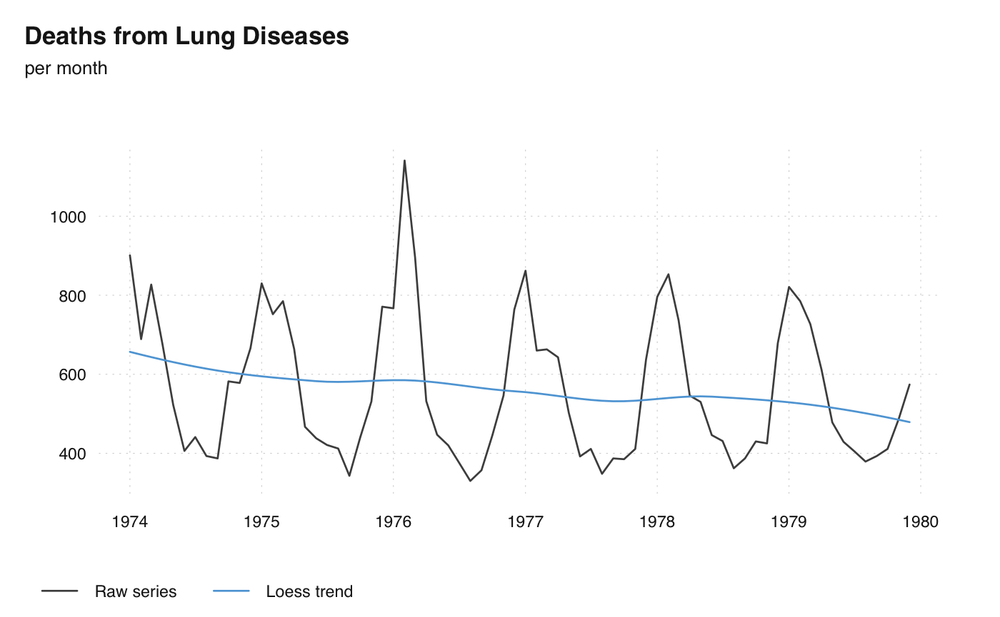

Trend estimation that uses stats::loess().
ts_trend(x, ...)ts-boxable time series, an object of class ts, xts, zoo,
data.frame, data.table, tbl, tbl_ts, tbl_time, tis, irts or
timeSeries.
arguments, passed to stats::loess():
degree degree of Loess smoothing
span smoothing parameter, if NULL, an automated search performed (see
Details)
a ts-boxable object of the same class as x, i.e., an object of
class ts, xts, zoo, data.frame, data.table, tbl, tbl_ts,
tbl_time, tis, irts or timeSeries.
Cleveland, William S., Eric Grosse, and William M. Shyu. "Local regression models." Statistical models in S. Routledge, 2017. 309-376.
# \donttest{
ts_plot(
`Raw series` = fdeaths,
`Loess trend` = ts_trend(fdeaths),
title = "Deaths from Lung Diseases",
subtitle = "per month"
)

# }